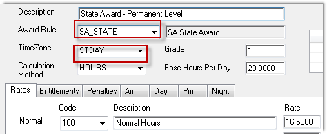

Home
Tutorial
Introduction
The scenario:
We want to pay a 20% shift loading on the portion of a shift that finishes outside the normal day shift hours.
.This document outlines the components that you need to configure to automate this.
|
Getting There:
[ SC ] –> Modules / Module Options
|
The scenario in detail
For Mon - Fri shifts, we want to pay a 20% shift loading on the hoursoutside of the normal day hours (06.00 am to 18.00).
As an example :
- a shift from 07.00 - 19.00 will receive 1.00 hour of shift loading.
- a shift from 15.00 to 21.00 will receive 3.00 hours of 20% loading.
Step 1 - the Classification Code
The giving of shift allowances is generally driven through an employees classification (payclass) code. The classification code in turn relies on the TimeZone and Award Interpreter to automate the calculation.

This is the basic definition of an classification, with the two elements that we'll need to attend to highlighted.
Top of Page
Step 2 - the TimeZone definition
The completed timezone definition is below:
The Afternoon and Night Shift Start values must both be the same.
The Span Loadings check box must be ticked - it controls the paying of just the excess hours, of the definition of your Day and Night Time Spans.
Top of Page
Step 3 - the Award definition
The definition of the award interpreter is quite simple. We're interested only in the Mon-Fri, therefore we're only showing the relevant pieces.
The link codes are saying pay Normal, Shift Loading & Uniform Allowance (if linked at the classification level), and let's go back to the classification definition.
Top of Page
Step 4 - classification code -
Whilst not a necessary component of the payment of bonuses, we saw this item on the award definition, so let's quickly show you how it will work into the costing of a shift.
You see that in the award definition we have a "U" code, what PowerForce calls a "Link Code" - it's a link between the code in the award interpreter and the actual rate that someone will be paid. In this example the U code will pay something called an Allowance code, which itself has a value UNIF.
Now, you might be asking yourself why so much long windesness to pay an allowance - and the simple answer is:
This award definition can be applied to multiple classifications, where each classification can have their own individual value for the equivalent "UNIF" in this example.
Top of Page
Step 5 - the am, day, pm, night loading definitions
To quickly recap on the goal of this definition, we want to pay a 20% leave loading on those parts of a shift that fall outside of a normal day (as defined). The first entry we have is "AM", and in similar fashion to the definition of the uniform allowance above. We see that if the shift is defined as am, and the award has an SH code, then according to this definition we are to pay an allowance called SHFT (see below).
The day definition is next across the classification code configuration. What we see here is that there's nothing "Link"ed to be paid for a day shift.
The next item is pm, which looks remarkably like am, as does the image following night.
And, you'll notice two definitions on this sccreen - complete them both as you see below.
Top of Page
Step 6 - the allowance code definition
The following image shows the Shift Loading allowance definition.
The elements that you want to take away from here are the "Method" -> 'loading', the value 20.00 as the rate, and the pay code equivalent (how payroll will treat the $ value of this allowance).
Top of Page
Step 7 - A quick look at a costed shift
Without too much ceremony, to verify that your changes are actually working as you'd expect them. Take any shift that is being worked by an employee on the classification that you are modifying. Double click on the shift to open the time edit window, and before doing anything look to the right of the screen to see what zone the system has defined the shift. In the example that we're showing the original value is Day, we change the post start time to 05.00 and 'tab off' the start time to the post end time - we see that the system has changed the day type to
rotating. An excellent immediate indicator that things are changing.
You can see the 05.00, 07.00 post times. Now to see what's on the costs tab.
Top of Page
Step 8 - the costs tab
To read this correctly. Recall that the shift is 05.00 - 07.00, so there's only 1 hour for which a shift allowance is due (the 05.00 - 06.00 hour). The hourly pay is $16.56, 20% therefore is $3.3120. And, as per the award interpreter, we see a Uniform Allowance.
Another quick example, here we've changed the post times to 17.00 - 19.30, and the costs are as follows:
Here we have a 1.5 hours of shift allowance for the (18.00 - 19.30) period, and again the $3.3120 represents a 20% bonus, for 1.5 hours to give $4.9680.
See Also
 PowerForce Controls PowerForce Controls
|